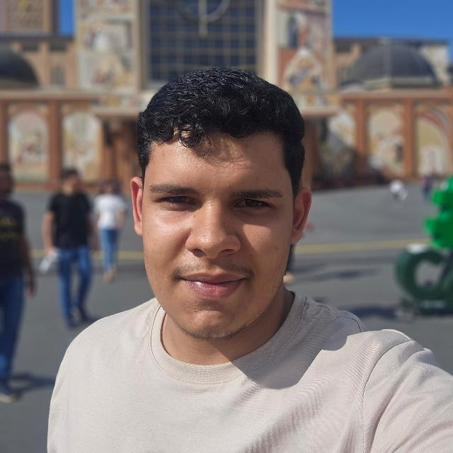

Nome: Paulo Lázaro da Rocha Souza
Idade: 17 anos
Objetivo: Atuar fora da área de informática.
Instagram: https://www.instagram.com/lazaropaulo583?utm_source=qr
Ensino Médio em andamento - IFAL
Em busca da primeira oportunidade.
HobbiesAssistir meus animes e séries. |
MetasTornar-me bem sucedido. |
SonhosViajar pelo mundo e conhecer novas culturas. |